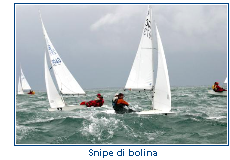

|
IL DELEGATO DI CLASSE DELLA XIV� ZONA "ROGER OLIVIERI"
Fitzcarraldo - Che diffusione ha la classe Snipe nel lago di Garda?
Roger Olivieri - Lo Snipe in XIV zona rappresenta una realt� interessante da moltissimi anni. Realt� che raggruppa velisti di tutti i livelli nel pieno rispetto del motto della classe - Seriuos sailing Serious fun
Ci sono pi� di 40 barche attive organizzate nelle Flotte di Cremona, Garda , Ledro, Caldaro, Velica Trentina, Punta Indiani.
Fitz - Qual'� l'evento velico pi� importante della classe in XIV zona?
R.O. - Dal 2005 abbiamo istituito il Trofeo Gardasnipe che � alla sua 3� edizione.
Il Trofeo raccoglie in un'unica classifica le principali regate che si svolgono nei laghi di Garda, Caldonazzo e Ledro. Lo scorso anno ha visto partecipare pi� di 90 timonieri provenienti da tutta Italia e da altre nazioni europee come Polonia, Germania, Belgio,Svezia.
Fitz - Come si comporta lo Snipe in navigazione?
R.O. - Per quanto riguarda le prestazioni posso dire che la barca � Tecnica e Tattica. Essendo una barca pesante richiede concentrazione nel  mantenerla sempre al massimo delle prestazioni di bolina e di poppa. Nonostante il peso e la ridotta superficie velica plana � non si direbbe ma plana. E� sicura e maneggevole anche con venti forti fino a 25 nodi.
LO SNIPE NEL CUORE DEGLI SNIPISTI
Lo snipe raccontato dagli "snipisti" famosi anche in altre classi.
- Proprio cos�, lo Snipe prova che una buona competizione � pi� importante della velocit�.� Paul Elvstrom, 4 medaglie d�Oro Finn, Campione del Mondo Snipe 1959 e molto altro.
- �Sono passati pi� di trent�anni, ma devo proprio allo Snipe e poi al Finn tutto ci� che ho raccolto sullo Star negli anni �80 con Alfio Peraboni�. Giorgio Gorla, medaglia di bronzo Star � Tallin 1980 e Long Beach 1984, Campione del Mondo Star, Campione Italiano Snipe 1966.
-�Se giri la prima boa sei lunghezze dietro al primo in una regata di 470, sei probabilmente in seconda posizione. Se la giri sei lunghezze dietro
in una regata di Snipe, sei fortunato se sei nei primi dieci! Rimasi tanto impressionata della Classe Snipe che decisi di regatare l�intero Southern Circuit la primavera precedente le selezioni olimpiche del 1988, invece di andare in Europa per i Mondiali 470�. Allison Jolly, medaglia d�oro 470 femminile - Pusan 1988.
..............continua
|